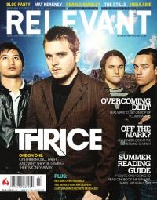

CMnexus
: Contemporary Christian culture, music, and media.
|
RelevantJul / Aug 2006, #21
| Cover |
|---|
|  | | Writers in this Issue |
|---|
Brandon, John
Carey, Jesse
Clark, Tyler L.
Esposito, Benjamin
Farias, Andree
Holliday, John
Hunt, Jeremy
Lawrence, Cameron
Maurer, Aaron
McCracken, Brett
Reed, Jackson
Smith, Brian A.
Troutman, Chris
Tworkowski, Jamie
Warren, Shellie R.
|
Cover Feature:
- "Image of the Invisible" by Jamie Tworkowski
Article:
- "Her Journey From Wide-Eyed Novice to Soulful Powerhouse" by Shellie R. Warren
- "They Don't Care What You Think of Their Next Album. Really." by Jackson Reed
- "Master of His Own Destiny: The Allegedly Accidental Success of Mat Kearney" by John Holliday
Slices Spotlight:Music Reviews: |
|